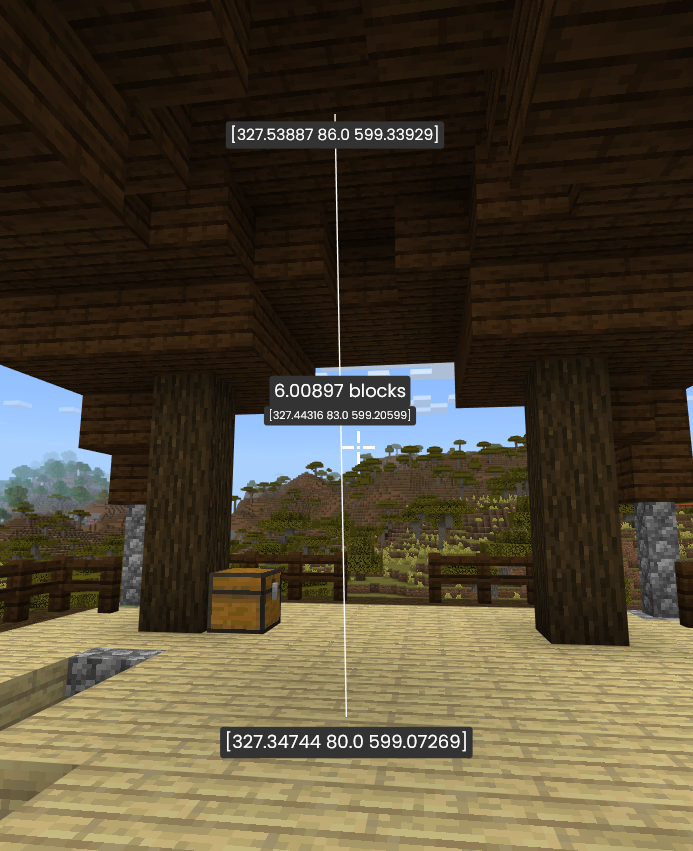

This is a mod for measuring distances in the world. When you press a button, it finds the coordinates of the point you're looking at past your crosshair. Once you've set two points, it displays their coordinates, the distance between them, and the coordinates of the midpoint.
